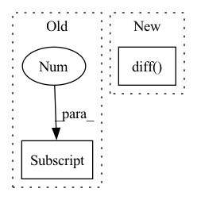

Pattern ID :33046
Before Change
self._kernel_coefficients = gauss_kernel(tp, self._knots_tp_coefficients, rho=self.regression_rho)
self._num_knots_coefficients = len(self._knots_tp_coefficients)
if self.date_freq is None:
self.date_freq = pd.infer_freq(date_array)[0]
self._regression_knot_dates = get_knot_dates(date_array[0], self._regression_knots_idx, self.date_freq)
def _set_knots_scale_matrix(self, df, training_meta):
num_of_observations = training_meta["num_of_observations"]After Change
self._kernel_coefficients = gauss_kernel(tp, self._knots_tp_coefficients, rho=self.regression_rho)
self._num_knots_coefficients = len(self._knots_tp_coefficients)
if self.date_freq is None:
self.date_freq = date_array.diff() .min()
self._regression_knot_dates = get_knot_dates(date_array[0], self._regression_knots_idx, self.date_freq)
def _set_knots_scale_matrix(self, df, training_meta):In pattern: SUPERPATTERN
Frequency: 3
Non-data size: 2
Instances Fragment ID: 95551485
Project Name: uber/orbit
Commit Name: 5c2f25a0d8fd68f7f4b520daf4feba2ab0276126
Time: 2021-09-08
Author: michael.guo.221@gmail.com
File Name: orbit/template/ktr.py
M Class Name: KTRModel
N Class Name: KTRModel
M Method Name: _set_coefficients_kernel_matrix(3)
N Method Name: _set_coefficients_kernel_matrix(3)
M Parent Class: ModelTemplate
N Parent Class: ModelTemplate
M File Name: orbit/template/ktr.py
N File Name: orbit/template/ktr.py
M Start Line: 484
M End Line: 506
N Start Line: 484
N End Line: 506
Before Change
"""
d = self.size[index][0].to("cuda")
s = self.size[index][1].to("cuda")
m = self.size[index][2] .to("cuda")
return x, y, d, s, size_class
After Change
// else:
// size_class = 5
y = self.y_data[index].to("cuda")
y_first_derivative = torch.diff( y, dim=0)
y_second_derivative = torch.diff(y_first_derivative, dim=0)
"""
size[index][0] = np.min(diastolic list)
size[index][1] = np.max(systolic list) Fragment ID: 95551484
Project Name: tvs-ai/pytorch_rppgs
Commit Name: c1b2bd1f750e2da30823147e4d7c70501000b2c7
Time: 2023-01-09
Author: forownsake@gmail.com
File Name: vid2bp/BPNetDataset.py
M Class Name: BPNetDataset
N Class Name: BPNetDataset
M Method Name: __getitem__(2)
N Method Name: __getitem__(2)
M Parent Class: Dataset
N Parent Class: Dataset
M File Name: vid2bp/BPNetDataset.py
N File Name: vid2bp/BPNetDataset.py
M Start Line: 17
M End Line: 39
N Start Line: 17
N End Line: 41
Before Change
if date_freq is None:
// infer date freq if not supplied
date_freq = pd.infer_freq(date_array)[0]
knot_idx = get_dates_delta(
start_date=date_array[0],
end_date=_knot_dates,After Change
if date_freq is None:
// infer date freq if not supplied
date_freq = date_array.diff() .min()
knot_idx = get_dates_delta(
start_date=date_array[0], Fragment ID: 95551486
Project Name: uber/orbit
Commit Name: 5c2f25a0d8fd68f7f4b520daf4feba2ab0276126
Time: 2021-09-08
Author: michael.guo.221@gmail.com
File Name: orbit/utils/knots.py
M Class Name: AnonimousClass
N Class Name: AnonimousClass
M Method Name: get_knot_idx(6)
N Method Name: get_knot_idx(6)
M Parent Class:
N Parent Class:
M File Name: orbit/utils/knots.py
N File Name: orbit/utils/knots.py
M Start Line: 83
M End Line: 83
N Start Line: 84
N End Line: 84